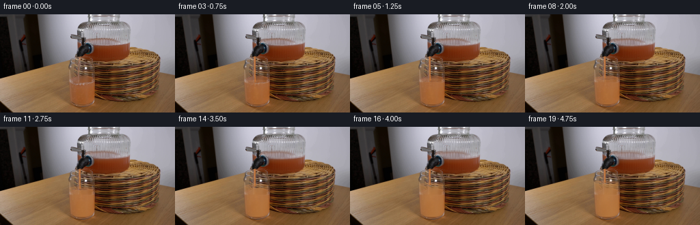
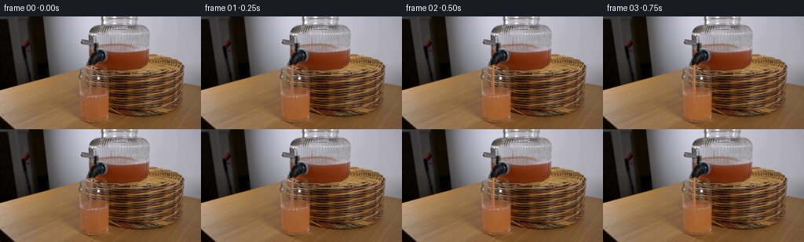

CODING AGENTS AS PIXEL WORLD MODELS
traex/GPT-6.1-Sol · 0072
点击播放 · 原生 RGB 像素
逐轮保存的候选
回放视频、检查图与代码变化。
每份候选均可单独播放。实际图片检查记录在下方工具轨迹中。
候选 01播放与检查图
点击播放 · 原生 RGB 像素


展开代码变化
--- 上一保存版本
+++ 本次保存版本
@@ -0,0 +1,154 @@
+from pathlib import Path
+import numpy as np
+from PIL import Image
+from scipy.ndimage import gaussian_filter, map_coordinates
+import artifact_io
+
+ROOT=Path(__file__).resolve().parent
+S=4
+H,W=144,256
+first=np.array(Image.open(ROOT/'first_frame.png').convert('RGB'), dtype=np.uint8)
+base=first.astype(np.float32)
+y,x=np.mgrid[0:H*S,0:W*S].astype(np.float32)
+x=(x+.5)/S-.5; y=(y+.5)/S-.5
+original=np.repeat(np.repeat(base,S,0),S,1)
+rng=np.random.default_rng(724)
+noise=gaussian_filter(rng.normal(0,1,(H*S,W*S)).astype(np.float32),1.4)
+noise/=noise.std()
+
+def smooth(a,b,z):
+ v=np.clip((z-a)/(b-a),0,1)
+ return v*v*(3-2*v)
+
+def mix(im,col,mask):
+ a=np.clip(mask,0,1)[...,None]
+ return im*(1-a)+np.asarray(col)*a
+
+def sample_at(X,Y):
+ return np.stack([map_coordinates(base[:,:,c],[Y,X],order=1,mode='nearest') for c in range(3)],axis=-1)
+
+# Inner silhouette of the stationary tumbler: tapered, thick rounded foot.
+left=100.0+.046*(y-74)+.0044*np.maximum(y-116,0)**2
+right=136.6+.029*(y-74)-.035*np.maximum(y-121,0)**2
+center=(left+right)/2
+rad=(right-left)/2
+u=(x-center)/rad
+side=smooth(0,.8,x-left)*(1-smooth(-.8,0,x-right))
+bottom=128.4+3.4*np.sqrt(np.maximum(0,1-u*u))
+inside=side*(1-smooth(bottom-.6,bottom+.4,y))*smooth(69,70.5,y)
+# The glass's original surface reflection is no longer a stationary line once filled.
+repair=sample_at(x, np.clip(105.0+(y-100.0)*.38,104.5,108))
+repairmask=np.exp(-((y-101.5)/2.7)**4)*side
+# Permanent longitudinal reflections from the first photograph.
+edgehighlight=np.exp(-((x-(left+1.5))/1.1)**2)*.19+np.exp(-((x-(right-1.1))/.85)**2)*.24
+
+frames=[first]
+for k in range(1,20):
+ t=k/4
+ flow=smooth(.03,.35,t)
+ # Constant flow; total added volume is small compared with the dispenser reservoir.
+ rise=4.35*max(0,t-.13)
+ level=100.7-rise
+ im=original.copy()
+ # Lowering the dispenser meniscus conserves the volume of the receiving glass.
+ drop=rise*.105
+ weight=(smooth(132,137,x)*(1-smooth(187.5,190.5,x))
+ *smooth(31,35,y)*(1-smooth(51,56,y)))
+ chroma=np.clip((original[:,:,0]-original[:,:,2]-8)/45,0,1)
+ glasskeep=.3+.7*chroma
+ moved=sample_at(x,y-drop)
+ im=mix(im,moved,weight*glasskeep*.86)
+
+ # A curved liquid surface, with a shallow elliptical front meniscus.
+ meniscus=level+3.0*np.sqrt(np.maximum(0,1-u*u))
+ wave=(.27*np.sin((x-115)*.7-t*11)+.15*np.sin((x-112)*1.4-t*16))*flow
+ surface=meniscus+wave
+ fill=smooth(surface-.48,surface+.5,y)*inside
+ depth=np.maximum(0,y-level)
+ # Grapefruit juice disperses rapidly through the pre-existing clear water.
+ concentration=1-np.exp(-t/2.9)
+ cloud=.11*np.sin((x-118)*.21+depth*.16-t*1.7)*np.exp(-depth/40)
+ conc=np.clip(concentration+cloud*concentration,0,1)
+ optical=np.sqrt(np.maximum(0,1-u*u))
+ alpha=(.11+.68*conc)*(.74+.26*optical)*fill
+ alpha*=1-edgehighlight
+ cleaned=mix(im,np.repeat(np.repeat(repair[::S,::S],S,0),S,1) if False else repair,
+ repairmask*smooth(.8,3.8,rise)*.94)
+ # Warm side lighting and nonuniform diffuse pulp scattering.
+ light=8*optical+3*np.sin((x-109)*.09)
+ liquid=np.empty_like(im)
+ liquid[:,:,0]=180+light+5*conc-0.065*depth+noise*.6
+ liquid[:,:,1]=110+light+17*conc-0.05*depth+noise*.48
+ liquid[:,:,2]=55+light*.65+14*conc-0.02*depth+noise*.38
+ # Strong pulp/juice opacity just below the inlet develops into curling, settling wisps.
+ z=np.maximum(0,y-level)
+ jetx=116.0+1.9*np.sin(z*.19-t*2.5)*(1-np.exp(-z/9))+.08*z
+ sigma=1.0+.11*z+.6*np.sin(z*.08-t)
+ plume=np.exp(-((x-jetx)/np.maximum(sigma,1))**2)
+ plume*=np.exp(-z/30)*smooth(-.5,2,z)*smooth(0,.8,t)
+ plume*=.72+.28*np.sin(z*.45-t*8)**2
+ plumealpha=fill*plume*(.34-.14*concentration)
+ # Advect the old liquid line away, replacing only water pixels, not the glass walls.
+ im=mix(im,cleaned,fill)
+ im=mix(im,liquid,alpha)
+ plumecolor=np.empty_like(im)
+ plumecolor[:,:,0]=196+7*optical+noise*.7
+ plumecolor[:,:,1]=123+9*optical+noise*.5
+ plumecolor[:,:,2]=63+5*optical+noise*.4
+ im=mix(im,plumecolor,plumealpha)
+
+ # Thin elliptical upper surface, transparent but visibly agitated by the incoming jet.
+ ry=2.65
+ q=u*u+((y-level)/ry)**2
+ surfmask=(1-smooth(.88,1.09,q))*inside*(1-smooth(level+.6,level+3.5,y))
+ surfacecolor=np.empty_like(im)
+ ripple=.5+.5*np.sin(np.sqrt(((x-116)/1.4)**2+((y-level)*2.2)**2)*3.5-t*13)
+ surfacecolor[:,:,0]=181+14*ripple+5*concentration
+ surfacecolor[:,:,1]=116+11*ripple+12*concentration
+ surfacecolor[:,:,2]=66+9*ripple+10*concentration
+ im=mix(im,surfacecolor,surfmask*(.19+.26*concentration))
+ rimline=np.exp(-((y-surface)/.4)**2)*side*inside
+ im=mix(im,[220,167,114],rimline*(.14+.14*concentration))
+ # Several low-amplitude radial ripples spread from the point of impact.
+ for j in range(3):
+ phase=(t*2.0+j/3)%1
+ rr=1.0+phase*13
+ er=np.sqrt((x-116)**2+((y-level)*4)**2)
+ ring=np.exp(-((er-rr)/.6)**2)*surfmask*(1-phase)*.19
+ im=mix(im,[221,165,112],ring)
+
+ # Laminar jet from the downward mouth of the tap; gravity accelerates and narrows it.
+ sy=61.3
+ d=np.maximum(0,y-sy)
+ xc=116.15+.016*d+.10*np.sin(d*.48-t*11)+.035*np.sin(d*1.6-t*23)
+ halfwidth=(1.23/np.sqrt(1+d*.024))*(1+.045*np.sin(d*.8-t*21))*flow
+ lateral=(x-xc)/np.maximum(halfwidth,.08)
+ lengthmask=smooth(sy-.3,sy+.25,y)*(1-smooth(level+.6,level+1.9,y))
+ jetmask=(1-smooth(.72,1.20,np.abs(lateral)))*lengthmask*flow
+ jetcol=np.empty_like(im)
+ bright=np.exp(-((lateral+.29)/.29)**2)
+ centerlight=np.sqrt(np.maximum(0,1-lateral*lateral))
+ flicker=2*np.sin(d*1.9-t*26)+1.3*np.sin(d*.7-t*18)
+ jetcol[:,:,0]=154+38*centerlight+25*bright+flicker
+ jetcol[:,:,1]=77+32*centerlight+43*bright+flicker*.8
+ jetcol[:,:,2]=33+19*centerlight+32*bright+flicker*.4
+ im=mix(im,jetcol,jetmask*.95)
+ # Small submerged bubbles entrained at the impact, carried down the mixing plume.
+ for j in range(5):
+ age=(t*.58+j*.227)%1
+ by=level+3+age*18
+ bx=116.5+np.sin(j*2.6+t*1.7)*(.7+age*2.3)+age*1.7
+ r=.26+.12*np.sin(j+1)**2
+ dist=np.sqrt((x-bx)**2+((y-by)*.9)**2)
+ bm=(1-smooth(r-.12,r+.2,dist))*fill*(1-age)*.23
+ im=mix(im,[237,183,128],bm)
+ # Impact depression and tiny crest remain contained inside the tumbler.
+ impact=np.exp(-((x-(116.15+.016*(level-sy)))/1.7)**2-((y-level-.3)/.62)**2)*flow
+ im=mix(im,[135,80,40],impact*.24)
+ crest=np.exp(-((x-118.0)/.58)**2-((y-level+.7-.22*np.sin(t*19))/.4)**2)*flow
+ im=mix(im,[229,172,116],crest*.37)
+ # All unchanged pixels remain precisely those of the locked-off first frame.
+ frame=np.clip(np.rint(im.reshape(H,S,W,S,3).mean(axis=(1,3))),0,255).astype(np.uint8)
+ frames.append(frame)
+frames=np.asarray(frames,dtype=np.uint8)
+artifact_io.save(frames,ROOT)
候选 02播放与检查图
点击播放 · 原生 RGB 像素

展开代码变化
--- 上一保存版本
+++ 本次保存版本
@@ -72,8 +72,7 @@
optical=np.sqrt(np.maximum(0,1-u*u))
alpha=(.11+.68*conc)*(.74+.26*optical)*fill
alpha*=1-edgehighlight
- cleaned=mix(im,np.repeat(np.repeat(repair[::S,::S],S,0),S,1) if False else repair,
- repairmask*smooth(.8,3.8,rise)*.94)
+ cleaned=mix(im,repair,repairmask*smooth(.8,3.8,rise)*.94)
# Warm side lighting and nonuniform diffuse pulp scattering.
light=8*optical+3*np.sin((x-109)*.09)
liquid=np.empty_like(im)
可观测工具轨迹
实际执行的命令与返回图片。
命令 1exit 0
/bin/bash -lc 'ls -la && cat prompt.txt && cat GENERATION_RULES.md'
命令 2exit 0
/bin/bash -lc "cat artifact_io.py && python - <<'PY'
from PIL import Image
import numpy as np
im=np.array(Image.open('first_frame.png')); print(im.shape)
print('minmax',im.min(axis=(0,1)),im.max(axis=(0,1)))
# color ascii 128x72 using nearest named colors
im=np.array(Image.fromarray(im).resize((128,72)))
colors={' ': [235,238,239],'.':[181,185,187],':':[130,137,144],';':[85,90,100],'#':[35,40,48], 'R':[170,52,47],'r':[105,50,45],'o':[206,123,75],'O':[235,170,111],'y':[245,212,167],'b':[104,130,159],'B':[166,193,211]}
vs=np.array(list(colors.values())); names=np.array(list(colors))
d=((im[:,:,None,:].astype(float)-vs)**2).sum(-1); idx=d.argmin(-1)
for row in idx:print(''.join(names[row]))
PY"命令 3exit 0
/bin/bash -lc "python - <<'PY'
from PIL import Image
import numpy as np
im=np.array(Image.open('first_frame.png'))
# full 128 luminance ascii
chars=np.array(list(' .,:;irsXA253hMHGS#9B&@'))
gray=(im*[.2126,.7152,.0722]).sum(-1)
a=np.array(Image.fromarray(gray.astype('uint8')).resize((128,72)))
for j,row in enumerate(a): print(f'{j*2:03} '+''.join(chars[np.minimum((row/256*len(chars)).astype(int),len(chars)-1)]))
print('RGB table at x=85..150')
for y in range(45,144,4):
print(y,' '.join('%3d:%3d,%3d,%3d'%(x,*im[y,x]) for x in range(85,151,5)))
PY"命令 4exit 0
/bin/bash -lc "python - <<'PY'
from PIL import Image
import numpy as np
im=np.array(Image.open('first_frame.png')).astype(float)
chars=np.array(list(' .:-=+*#%@'))
for bounds in [(92,28,142,70),(88,62,144,139),(132,33,228,132)]:
x0,y0,x1,y1=bounds; crop=im[y0:y1,x0:x1]; lum=crop @ np.array([.2126,.7152,.0722]); print('\\nREGION',bounds)
print(' '+''.join(str(x//10%10) for x in range(x0,x1)));print(' '+''.join(str(x%10) for x in range(x0,x1)))
for j,row in enumerate(lum):print(f'{j+y0:03} '+''.join(chars[np.minimum((row/210*10).astype(int),9)]))
PY"命令 5exit 0
/bin/bash -lc "python - <<'PY'
from PIL import Image
import numpy as np
im=np.array(Image.open('first_frame.png'))
for y in [10,20,30,35,40,45,50,55,60,65,70,75,80,85,90,95,100,105,110,115,120,125,130,135]:
print('y=',y)
print(' '.join('%d:(%d,%d,%d)'%(x,*im[y,x]) for x in range(100,231,4)))
PY"命令 6exit 0
/bin/bash -lc "python - <<'PY'
from PIL import Image
import numpy as np
im=np.array(Image.open('first_frame.png'))
chars=np.array(list(' .:-=+*#%@'))
print('Lum region, brighter left glass')
for y in range(63,140):
row=im[y,94:144]; gray=row@np.array([.2126,.7152,.0722]); print(f'{y:03} '+''.join(chars[np.clip(((gray-40)/140*10).astype(int),0,9)]))
print('\\nred green brightness within glass')
for y in range(88,111):
print(y,' '.join(f'{x}:{im[y,x,0]}/{im[y,x,1]}' for x in range(101,139,2)))
PY"命令 7exit 0
/bin/bash -lc "python - <<'PY'
from PIL import Image
import numpy as np
im=np.array(Image.open('first_frame.png')).astype(float)
# colored annotations: ratio of chroma in jar/cup red dominance
for name,bounds in [('Dispenser',(109,25,194,72)),('Cup',(94,62,145,139))]:
x0,y0,x1,y1=bounds; print(name)
for y in range(y0,y1):
row=im[y,x0:x1]; lum=row.mean(-1); chroma=(row[:,0]-row[:,2]); c=[]
for l,cd,p in zip(lum,chroma,row):
if l<30: ch='@'
elif l<55: ch='#'
elif cd>90: ch='R'
elif cd>65: ch='r'
elif cd>40: ch='o'
elif cd>20: ch='y'
elif cd>0: ch='.'
elif l>180: ch=' '
elif l>140: ch='-'
elif l>100: ch='='
else: ch=':'
c.append(ch)
print(f'{y:03} '+''.join(c))
PY"命令 8exit 0
/bin/bash -lc "python - <<'PY'
from PIL import Image
import numpy as np
im=np.array(Image.open('first_frame.png'))
# exact rgb spout region
for y in range(57,71):
print(y, ' '.join(f'{x}:{tuple(im[y,x])}' for x in range(105,122)))
PY"命令 9exit 0
/bin/bash -lc "python - <<'PY'
import scipy, numpy, PIL
print('scipy', scipy.__version__)
PY"命令 10exit 0
/bin/bash -lc "cat > generate.py <<'PY'
from pathlib import Path
import numpy as np
from PIL import Image
from scipy.ndimage import gaussian_filter, map_coordinates
import artifact_io
ROOT=Path(__file__).resolve().parent
S=4
H,W=144,256
first=np.array(Image.open(ROOT/'first_frame.png').convert('RGB'), dtype=np.uint8)
base=first.astype(np.float32)
y,x=np.mgrid[0:H*S,0:W*S].astype(np.float32)
x=(x+.5)/S-.5; y=(y+.5)/S-.5
original=np.repeat(np.repeat(base,S,0),S,1)
rng=np.random.default_rng(724)
noise=gaussian_filter(rng.normal(0,1,(H*S,W*S)).astype(np.float32),1.4)
noise/=noise.std()
def smooth(a,b,z):
v=np.clip((z-a)/(b-a),0,1)
return v*v*(3-2*v)
def mix(im,col,mask):
a=np.clip(mask,0,1)[...,None]
return im*(1-a)+np.asarray(col)*a
def sample_at(X,Y):
return np.stack([map_coordinates(base[:,:,c],[Y,X],order=1,mode='nearest') for c in range(3)],axis=-1)
# Inner silhouette of the stationary tumbler: tapered, thick rounded foot.
left=100.0+.046*(y-74)+.0044*np.maximum(y-116,0)**2
right=136.6+.029*(y-74)-.035*np.maximum(y-121,0)**2
center=(left+right)/2
rad=(right-left)/2
u=(x-center)/rad
side=smooth(0,.8,x-left)*(1-smooth(-.8,0,x-right))
bottom=128.4+3.4*np.sqrt(np.maximum(0,1-u*u))
inside=side*(1-smooth(bottom-.6,bottom+.4,y))*smooth(69,70.5,y)
# The glass's original surface reflection is no longer a stationary line once filled.
repair=sample_at(x, np.clip(105.0+(y-100.0)*.38,104.5,108))
repairmask=np.exp(-((y-101.5)/2.7)**4)*side
# Permanent longitudinal reflections from the first photograph.
edgehighlight=np.exp(-((x-(left+1.5))/1.1)**2)*.19+np.exp(-((x-(right-1.1))/.85)**2)*.24
frames=[first]
for k in range(1,20):
t=k/4
flow=smooth(.03,.35,t)
# Constant flow; total added volume is small compared with the dispenser reservoir.
rise=4.35*max(0,t-.13)
level=100.7-rise
im=original.copy()
# Lowering the dispenser meniscus conserves the volume of the receiving glass.
drop=rise*.105
weight=(smooth(132,137,x)*(1-smooth(187.5,190.5,x))
*smooth(31,35,y)*(1-smooth(51,56,y)))
chroma=np.clip((original[:,:,0]-original[:,:,2]-8)/45,0,1)
glasskeep=.3+.7*chroma
moved=sample_at(x,y-drop)
im=mix(im,moved,weight*glasskeep*.86)
# A curved liquid surface, with a shallow elliptical front meniscus.
meniscus=level+3.0*np.sqrt(np.maximum(0,1-u*u))
wave=(.27*np.sin((x-115)*.7-t*11)+.15*np.sin((x-112)*1.4-t*16))*flow
surface=meniscus+wave
fill=smooth(surface-.48,surface+.5,y)*inside
depth=np.maximum(0,y-level)
# Grapefruit juice disperses rapidly through the pre-existing clear water.
concentration=1-np.exp(-t/2.9)
cloud=.11*np.sin((x-118)*.21+depth*.16-t*1.7)*np.exp(-depth/40)
conc=np.clip(concentration+cloud*concentration,0,1)
optical=np.sqrt(np.maximum(0,1-u*u))
alpha=(.11+.68*conc)*(.74+.26*optical)*fill
alpha*=1-edgehighlight
cleaned=mix(im,np.repeat(np.repeat(repair[::S,::S],S,0),S,1) if False else repair,
repairmask*smooth(.8,3.8,rise)*.94)
# Warm side lighting and nonuniform diffuse pulp scattering.
light=8*optical+3*np.sin((x-109)*.09)
liquid=np.empty_like(im)
liquid[:,:,0]=180+light+5*conc-0.065*depth+noise*.6
liquid[:,:,1]=110+light+17*conc-0.05*depth+noise*.48
liquid[:,:,2]=55+light*.65+14*conc-0.02*depth+noise*.38
# Strong pulp/juice opacity just below the inlet develops into curling, settling wisps.
z=np.maximum(0,y-level)
jetx=116.0+1.9*np.sin(z*.19-t*2.5)*(1-np.exp(-z/9))+.08*z
sigma=1.0+.11*z+.6*np.sin(z*.08-t)
plume=np.exp(-((x-jetx)/np.maximum(sigma,1))**2)
plume*=np.exp(-z/30)*smooth(-.5,2,z)*smooth(0,.8,t)
plume*=.72+.28*np.sin(z*.45-t*8)**2
plumealpha=fill*plume*(.34-.14*concentration)
# Advect the old liquid line away, replacing only water pixels, not the glass walls.
im=mix(im,cleaned,fill)
im=mix(im,liquid,alpha)
plumecolor=np.empty_like(im)
plumecolor[:,:,0]=196+7*optical+noise*.7
plumecolor[:,:,1]=123+9*optical+noise*.5
plumecolor[:,:,2]=63+5*optical+noise*.4
im=mix(im,plumecolor,plumealpha)
# Thin elliptical upper surface, transparent but visibly agitated by the incoming jet.
ry=2.65
q=u*u+((y-level)/ry)**2
surfmask=(1-smooth(.88,1.09,q))*inside*(1-smooth(level+.6,level+3.5,y))
surfacecolor=np.empty_like(im)
ripple=.5+.5*np.sin(np.sqrt(((x-116)/1.4)**2+((y-level)*2.2)**2)*3.5-t*13)
surfacecolor[:,:,0]=181+14*ripple+5*concentration
surfacecolor[:,:,1]=116+11*ripple+12*concentration
surfacecolor[:,:,2]=66+9*ripple+10*concentration
im=mix(im,surfacecolor,surfmask*(.19+.26*concentration))
rimline=np.exp(-((y-surface)/.4)**2)*side*inside
im=mix(im,[220,167,114],rimline*(.14+.14*concentration))
# Several low-amplitude radial ripples spread from the point of impact.
for j in range(3):
phase=(t*2.0+j/3)%1
rr=1.0+phase*13
er=np.sqrt((x-116)**2+((y-level)*4)**2)
ring=np.exp(-((er-rr)/.6)**2)*surfmask*(1-phase)*.19
im=mix(im,[221,165,112],ring)
# Laminar jet from the downward mouth of the tap; gravity accelerates and narrows it.
sy=61.3
d=np.maximum(0,y-sy)
xc=116.15+.016*d+.10*np.sin(d*.48-t*11)+.035*np.sin(d*1.6-t*23)
halfwidth=(1.23/np.sqrt(1+d*.024))*(1+.045*np.sin(d*.8-t*21))*flow
lateral=(x-xc)/np.maximum(halfwidth,.08)
lengthmask=smooth(sy-.3,sy+.25,y)*(1-smooth(level+.6,level+1.9,y))
jetmask=(1-smooth(.72,1.20,np.abs(lateral)))*lengthmask*flow
jetcol=np.empty_like(im)
bright=np.exp(-((lateral+.29)/.29)**2)
centerlight=np.sqrt(np.maximum(0,1-lateral*lateral))
flicker=2*np.sin(d*1.9-t*26)+1.3*np.sin(d*.7-t*18)
jetcol[:,:,0]=154+38*centerlight+25*bright+flicker
jetcol[:,:,1]=77+32*centerlight+43*bright+flicker*.8
jetcol[:,:,2]=33+19*centerlight+32*bright+flicker*.4
im=mix(im,jetcol,jetmask*.95)
# Small submerged bubbles entrained at the impact, carried down the mixing plume.
for j in range(5):
age=(t*.58+j*.227)%1
by=level+3+age*18
bx=116.5+np.sin(j*2.6+t*1.7)*(.7+age*2.3)+age*1.7
r=.26+.12*np.sin(j+1)**2
dist=np.sqrt((x-bx)**2+((y-by)*.9)**2)
bm=(1-smooth(r-.12,r+.2,dist))*fill*(1-age)*.23
im=mix(im,[237,183,128],bm)
# Impact depression and tiny crest remain contained inside the tumbler.
impact=np.exp(-((x-(116.15+.016*(level-sy)))/1.7)**2-((y-level-.3)/.62)**2)*flow
im=mix(im,[135,80,40],impact*.24)
crest=np.exp(-((x-118.0)/.58)**2-((y-level+.7-.22*np.sin(t*19))/.4)**2)*flow
im=mix(im,[229,172,116],crest*.37)
# All unchanged pixels remain precisely those of the locked-off first frame.
frame=np.clip(np.rint(im.reshape(H,S,W,S,3).mean(axis=(1,3))),0,255).astype(np.uint8)
frames.append(frame)
frames=np.asarray(frames,dtype=np.uint8)
artifact_io.save(frames,ROOT)
PY
python generate.py"命令 11exit 0
/bin/bash -lc "python - <<'PY'
from PIL import Image
import numpy as np
chars=np.array(list(' .:-=+*#%@'))
a=np.array(Image.open('frames/00.png')); b=np.array(Image.open('frames/19.png'))
for k in [0,4,12,19]:
im=np.array(Image.open(f'frames/{k:02}.png')); print('\\nFRAME',k)
for y in range(57,136,2):
row=im[y,99:143]; lum=row@np.array([.2126,.7152,.0722]); print(f'{y:03} '+''.join(chars[np.clip(((lum-30)/150*10).astype(int),0,9)]))
print('cup samples:',[(y, im[y,116].tolist()) for y in [65,72,78,83,90,100,110,120]])
print('change fraction',np.mean(np.any(a"'!=b,axis=-1)))
print('"'first exact:',np.array_equal(a,np.array(Image.open('first_frame.png'))))
print('range shape', np.load('pixels.npz')['pixels'].shape)
PY"命令 12exit 0
/bin/bash -lc "python generate.py && python - <<'PY'
from PIL import Image
import numpy as np
from pathlib import Path
p=np.load('pixels.npz')['pixels']
a=np.array(Image.open('first_frame.png').convert('RGB'))
assert p.shape==(144,256,20)
assert np.array_equal(np.array(Image.open('frames/00.png')), a)
assert len(list(Path('frames').glob('*.png')))==20
print('Validated: 20 RGB frames, 256x144, original first frame preserved.')
PY"保存候选 2 份；完成命令 12 次；可验证图片返回 0 张。原始 API 响应与完整日志保留在本地。